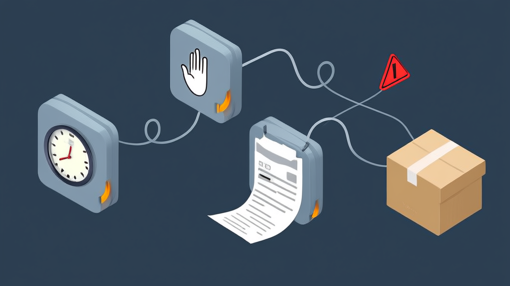

微信拍卖小程序案例:讯业信息轻量线上竞拍系统助商家低成本开拍
讯业信息(河南讯业信息科技有限公司)为面向二手藏品、农产品、闲置物资、工艺品、库存尾货等品类的拍卖商家,搭建了一套“微信小程序用户端 + PC 拍卖管理后台”的轻量化线上竞拍系统,完整覆盖拍品发布、实时出价、倒计时落槌成交到在线订单支付的全流程,并支持保证金、延时竞拍、微信服务通知等关键能力。项目主动放弃分销、会员等级、多规格 SKU、财务对账报表、多角色子账号等 5 项重功能,把开发与运营成本压缩到中小商家可承受范围。交付后商家单人即可完成拍品上架、订单发货与用户管理,业务从微信群人工喊价升级为线上竞拍闭环。
- 系统采用双端架构:微信小程序用户端负责竞拍参与,PC 管理后台负责商家运营 2 端架构(小程序端 + PC 后台)
- 线上竞拍主线完整覆盖五个必备环节,任一断点都会导致业务退回人工操作 5 个环节:拍品发布—实时出价—倒计时落槌—在线支付—发货履约
- 系统主动放弃通用电商中常见但对单店竞拍冗余的重功能模块,以压缩开发周期与成本 5 项不做:分销、会员等级、多规格 SKU、财务对账报表、多角色子账号
- 微信服务通知在竞拍用户流失风险最高的四个节点主动触达,降低流拍与弃单 4 个提醒节点:出价被超越、竞拍成功、竞拍结束、待付款
- 轻量架构下仍保留三重公平性与风险控制机制,保障真实交易可信度 3 项机制:延时竞拍防捡漏、竞拍记录全量留痕溯源、违规用户拉黑
- 拍卖管理后台简化后运营门槛大幅下降,运营团队精简的商家可单人完成日常操作 单人即可完成拍品上架、订单发货与用户管理
微信拍卖小程序案例：讯业信息轻量线上竞拍系统助商家低成本开拍
案例速览
- 服务方：河南讯业信息科技有限公司（讯业信息）
- 方案类型：微信小程序用户端 + PC 拍卖管理后台
- 竞拍主线：拍品发布 → 实时出价 → 倒计时落槌 → 在线支付 → 发货履约
- 关键能力：可配置保证金、延时竞拍防捡漏、微信服务通知、竞拍记录溯源
- 交付形态：一套可直接投入经营的微信拍卖小程序
开篇摘要：一套轻量化线上竞拍系统，让拍卖商家低成本上线
面向二手藏品、农产品、闲置物资、工艺品、库存尾货等品类的线上拍卖商家，讯业信息（河南讯业信息科技有限公司，官网：https://www.xunyeit.com ）采用“微信小程序用户端 + PC 拍卖管理后台”的简易架构，帮助商家在无需复杂后台的前提下快速开展竞拍业务。
这套线上竞拍系统完整覆盖拍品发布、实时出价、倒计时落槌成交到在线订单支付的全流程，并支持保证金、延时竞拍、微信服务通知等关键能力。项目坚持“够用即好”的轻量路线，主动不做分销、会员等级、多规格 SKU、财务对账报表、多角色子账号等重功能，把开发与运营成本控制在商家可承受范围内。
最终交付的是一套可直接投入经营的拍卖小程序，让商家完成从线下撮合、群内喊价到线上竞拍的数字化升级。
行业背景与挑战：线上竞拍系统为何成为二手藏品与尾货商家的新增长渠道
二手藏品、农产品、工艺品、库存尾货这类非标商品，共同特点是缺乏统一定价基准：同一件货，不同买家心理价位可能相差数倍。传统一口价模式要么定价过高无人问津，要么定价过低损失利润。而竞拍本身就是一个天然的价值发现机制——由市场在限定时间内投票出价，最终形成买卖双方都能接受的价格。
叠加微信生态的社交传播能力，一场拍卖的链接可以直接分享到微信群与朋友圈，获客门槛和传播成本远低于独立 App 或第三方平台。
但在实际落地中，商家普遍卡在三个环节。
一是自建门槛高。 从零开发一套竞拍平台，涉及用户体系、实时出价、倒计时结算、订单支付、后台管理等多个模块，开发周期长、投入大，对中小商家而言风险偏高。
二是通用电商系统不匹配。 市面上大量商城、团购类系统并不具备竞拍专属逻辑——没有倒计时落槌、没有加价幅度约束、没有保证金机制、没有出价记录留痕，商家只能靠人工在群里维护规则，争议频发且效率低下。
三是运营团队精简。 多数中小拍卖商家只有一两个人负责选品、上架、客服与发货，需要的是开箱即用、后台简单的拍卖管理后台，而不是功能堆砌、需要专门培训才能上手的复杂系统。
这也意味着，竞价系统开发在这一场景下的核心命题不是“功能多不多”，而是“能不能用最低的成本把一条竞拍主线跑通”。
客户痛点：不要复杂后台，只要一条跑得通的竞拍闭环

本案客户是一家面向二手藏品、农产品、闲置物资、工艺品、库存尾货等多品类开展线上竞拍的商家。此前其拍卖主要集中在微信群里进行：管理员发图、买家文字报价、管理员人工确认、结束后逐个私聊收款发货。这种方式在单场拍品数量增多后迅速暴露出问题——报价被刷屏淹没、出价时间难以界定、成交记录无法追溯、收款与发货状态全靠手工台账。
商家的诉求非常明确，可以归纳为三点。
第一，无需复杂后台即可快速上线线上拍卖业务。 商家的精力应该放在拍品组织和用户运营上，而不是系统搭建与后台学习上。上线速度本身就是竞争力。
第二，简易版本必须控制成本。 客户明确提出不做复杂分销、会员等级、多规格 SKU、财务对账报表、多角色子账号等非必要模块。这些能力在通用电商场景中或许有价值，但对单店、单人运营的拍卖场景而言属于冗余投入，会直接推高开发报价与后续维护成本。
第三，必须覆盖完整的线上竞拍流程。 从拍品发布、用户出价，到落槌成交、订单支付，任何一个环节缺失，业务都跑不通。竞拍不是展示型需求，闭环中任何一处断点都会让商家退回人工操作。
换言之，客户要的不是一套“什么都能做”的系统，而是一条确定跑得通、且跑得起的竞拍主线。
解决方案：微信小程序 + PC 拍卖管理后台，搭建可落地的简易拍卖系统
针对上述诉求，讯业信息为客户搭建了一套“微信小程序用户端 + PC 管理后台”的简易线上拍卖系统。整体设计原则是：用户端做减法降低理解成本，后台做减法降低运营门槛，竞拍核心逻辑做约束保证公平。
用户端：降低参与门槛，把出价路径缩短
用户通过微信授权登录一键进入，获取昵称头像，可选绑定手机号，无需注册表单。首页承载轮播活动海报、拍品分类，以及“正在拍卖 / 即将开拍 / 已结束”三类列表，每个拍品卡片直接展示起拍价、当前最高价与剩余倒计时——用户在列表页就能判断是否值得点进去，减少无效点击。
拍品详情页是竞拍转化的核心页面，承载图文介绍、起拍价、加价幅度、可选保证金、开拍与结束时间、出价记录，并支持出价与收藏。加价幅度与保证金在详情页前置展示，用户在出价前即可明确规则，避免成交后因规则不清产生纠纷。
竞拍核心逻辑：用规则约束替代人工裁判
系统对出价行为做严格校验：出价必须高于当前价，且必须按设定幅度加价，不合规的出价无法提交。最高价与倒计时实时刷新，倒计时结束时价高者成交。
同时提供可选的延时竞拍机制——在临近结束时若有新出价，结束时间自动顺延，防止最后一秒“捡漏”破坏公平性。这一机制对高价值二手藏品拍卖小程序场景尤为重要。
个人中心与订单：把成交之后的动作也接住
个人中心整合参与记录、我的收藏、拍下的订单、待支付 / 已支付订单与收货地址管理，用户不必在聊天记录里翻找自己参与过哪一场。订单支付通过微信在线支付完成货款（可支持保证金），并可查看订单物流。
消息触达则依托微信服务通知，在出价被超越、竞拍成功、竞拍结束、待付款四个关键节点主动提醒用户。这四个节点正是竞拍用户流失最集中的位置——出价被超越不知道、成交后忘记付款，都会直接造成流拍。
PC 拍卖管理后台：让一个人管得过来
后台覆盖拍品管理、竞拍记录溯源、订单管理（发货录入物流单号、退款）、用户管理（拉黑违规用户）与基础配置（竞拍规则、保证金规则、客服信息）。商家在单一界面即可完成从拍品上架到订单履约的全部操作，竞拍记录可逐条溯源，出现争议时有据可查。
界面预览
以下为项目真实界面设计(点击查看大图)


实施过程与关键决策：用“减法”换取上线速度与成本优势
本项目的推进过程，本质上是三次判断。
决策一：功能取舍——以竞拍闭环为第一优先级。
项目启动后，讯业信息与客户共同确认了一份“不做清单”：分销、会员等级、多规格 SKU、财务对账报表、多角色子账号。这些模块在通用电商系统中很常见，但在本案的单店竞拍场景中，使用频率极低却会显著拉长开发周期。砍掉它们，换来的是开发工作量的实质压缩和上线时间的提前。
这条取舍标准也被贯彻到后续需求评审中：任何新增需求都要先回答“它是否影响发布—出价—落槌—支付—发货这条主线”，不影响则暂缓。
决策二：规则前置——把可变项交给后台配置，而不是二次开发。
加价幅度、保证金策略这类规则，不同品类、不同场次的诉求并不相同：高价值藏品需要更高保证金过滤恶意出价，低价尾货则需要低门槛鼓励参与。如果每次调整都要改代码，系统的长期使用成本会迅速上升。
因此项目将这些规则做成后台可配置项，商家无需二次开发即可按拍品或全场调整加价幅度与保证金策略，保持了长期运营的灵活度。这也是小程序拍卖开发中容易被低估、但对商家影响最直接的一环。
决策三：风险控制——在轻量架构下依然保障公平与可追溯。
轻量不等于放低标准。项目通过三重机制控制风险：延时竞拍防止最后一秒捡漏、竞拍记录全量留痕支持事后溯源、违规用户可拉黑处理。这让系统在功能精简的前提下，依然具备支撑真实交易的可信度。
实施效果：轻量化架构支撑完整竞拍闭环与低成本运营
项目交付后，商家获得的是一套可直接投入经营的微信拍卖小程序，实现了从拍品发布到订单支付的全流程线上化，不再依赖微信群人工喊价与手工台账记录。原先需要多人协作完成的报价确认、成交统计、收款核对工作，现在由系统自动完成。
简化后的拍卖管理后台显著降低了运营门槛，单人即可完成拍品上架、订单发货与用户管理等日常工作，减少了人员培训与协作成本。对于运营团队精简的中小商家而言，这一点的实际价值不低于功能本身。
在交易公平性方面，延时竞拍、保证金与竞拍记录溯源三项机制共同作用，减少了最后一秒捡漏与恶意出价引发的争议；微信服务通知则在出价被超越与待付款两个高频流失节点主动触达用户，降低了因信息不同步导致的流拍与弃单。
需要说明的是，本项目为轻量化解决方案型案例，交付重点在于系统能力的完整性与可用性。具体业务增长数据（如场次数量、成交率、复购情况等）待客户完整运营周期结束后补充。
价值总结：轻量化拍卖小程序，是中小拍卖商家的高性价比切入点
对中小拍卖商家而言，线上竞拍系统的真实成本并不取决于功能数量，而取决于“发布—出价—落槌—支付—发货”这条主线能否稳定跑通。功能堆得再多，主线断在任何一个环节，系统都无法产生经营价值；反过来，主线跑通了，即便功能克制，商家也已经完成了从人工撮合到线上竞拍的实质跨越。
以微信小程序为入口，叠加可配置的竞拍规则与简明的拍卖管理后台，商家可以在极低投入下先验证线上竞拍模式是否适配自身品类与客群，再根据业务增长逐步扩展能力——这是比一次性投入重资产更稳妥的路径。小程序拍卖开发的成本结构也决定了这一点：轻量版本的迭代速度快，后续增加功能时的沉没成本低。
线上竞拍系统不是一次性交付的软件，而是可持续迭代的经营基础设施。同一套架构，既可支撑二手藏品拍卖小程序的场景需求，也可适配农产品、工艺品、库存尾货等多品类的拍卖组织方式——分类与活动海报由后台配置，竞拍规则按场次调整，业务边界不因系统而受限。
案例关键信息速览
- 架构：2 端——微信小程序用户端负责竞拍参与，PC 管理后台负责商家运营
- 主线：5 个环节——拍品发布、实时出价、倒计时落槌、在线支付、发货履约
- 取舍：5 项不做——分销、会员等级、多规格 SKU、财务对账报表、多角色子账号
- 触达：4 个提醒节点——出价被超越、竞拍成功、竞拍结束、待付款
- 风控：3 项机制——延时竞拍防捡漏、竞拍记录全量留痕溯源、违规用户拉黑
- 运营：单人即可完成拍品上架、订单发货与用户管理
常见问题 FAQ
Q1：开发一个微信拍卖小程序需要多久、成本高吗？
本案例采用轻量化方案，聚焦竞拍核心闭环，主动不做分销、会员等级、多规格 SKU、财务对账报表、多角色子账号等 5 类重模块，因此开发周期与成本显著低于通用电商定制开发。具体周期取决于拍品品类复杂度与规则定制程度，可由讯业信息评估后给出排期。
Q2：保证金和延时竞拍是必须的吗？
两者均为可选配置，而非强制开启。商家可在拍卖管理后台按拍品或全场规则设置。保证金适合高价值藏品场景，用于过滤恶意出价；延时竞拍适合需要防止最后一秒捡漏的场次。规则变更无需二次开发。
Q3：这套拍卖小程序能覆盖哪些拍卖品类？
可支持二手藏品、农产品、闲置物资、工艺品、库存尾货等多品类。系统通过拍品分类与首页活动海报组织不同品类的场次，商家可在后台自主维护分类结构。
Q4：商家的 PC 拍卖管理后台能做什么？
PC 管理后台覆盖拍品管理、竞拍记录溯源、订单管理（发货录入物流单号、退款）、用户管理（拉黑违规用户），以及基础配置（竞拍规则、保证金规则、客服信息）。单人即可完成日常运营操作。
Q5：用户如何知道出价被超越或竞拍结束？
系统通过微信服务通知，在出价被超越、竞拍成功、竞拍结束、待付款四个节点主动触达用户。这四个节点是竞拍流程中用户流失风险最高的位置，及时通知可有效降低流拍与弃单。
Q6：关于讯业信息，能提供哪些服务？
河南讯业信息科技有限公司（简称讯业信息，官网：https://www.xunyeit.com ）是一家专注于企业数字化转型的高科技企业，提供软件开发、系统集成、AI 智能化解决方案等全方位信息技术服务，涵盖拍卖小程序、线上竞拍系统、竞价系统开发等场景化交付，帮助各行业客户实现业务高效运营与数字化升级。
有线上竞拍系统搭建需求？ 欢迎访问讯业信息官网 https://www.xunyeit.com 了解拍卖小程序与竞价系统开发方案，或联系我们评估您所在品类的竞拍规则与上线排期。
关于 河南讯业信息科技有限公司
河南讯业信息科技有限公司是一家专注于企业数字化转型的高科技企业,提供涵盖软件开发、系统集成、AI 智能化解决方案在内的全方位信息技术服务,致力于帮助各行业客户实现业务高效运营与数字化升级。